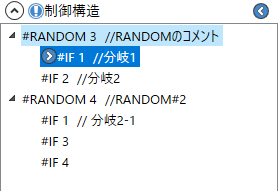
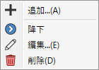

制御構造
#RANDOM及び#SWITCHによるランダム分岐の一覧です。
説明
-
#RANDOMは、楽曲読み込み時に与えられるランダムな値に従って譜面の内容を分岐し、
プレイする度に変化する譜面を実現するための機構です。 -
1個以上の制御構造が存在する場合、エキスパンダーのヘッダー部分に
 が表示されます。
が表示されます。
-
注意事項
-
このアプリではBMS command memoを参考に、全ての制御構造(#RANDOM #SETRANDOM #IF #ELSEIF #ELSE #SWITCH #SETSWITCH #CASE #DEF)を実装し、
入れ子の制御構造にも無制限に対応していますが、ほとんどのBMSプレイヤーは#RANDOM #SETRANDOM #IFしか実装しておらず、入れ子の制御構造にも対応していません。- 実際のプレイ時はもちろん、プレビューにおいても正常に反映されない可能性が高いため、ご注意ください。
- また、構文解析に再帰関数を用いているため、あまりにネストが深すぎる(目安:6000)とStackOverflowというエラーが発生する場合があります。
-
このアプリでは、#ELSEIFが含まれるBMSを正常に解釈できますが、エディタで#ELSEIFを追加することはできません。
- 単純に#IFで全く同じことができるので、不要と判断しオミットしています。
-
分岐枝内での小節長編集は非推奨です。
- ver0.4現在、実装上の都合により、分岐枝内で小節長を変更した際の見た目が、実際のBMSプレイヤーで処理される内容とは異なります。
- アセンブルにおいては、本来と異なる結果になりえるためご注意ください。
-
このアプリではBMS command memoを参考に、全ての制御構造(#RANDOM #SETRANDOM #IF #ELSEIF #ELSE #SWITCH #SETSWITCH #CASE #DEF)を実装し、

- 各構造はツリー形式で表示されます。
-
項目上で右クリックすることで、コンテキストメニューを開きます。
- 追加: 選択中の構造と同じ階層、またはその子階層に、新たに構造を追加します。
-
 降下: 枝(#IFなど)に対して選択可能で、その枝に降下します。
降下: 枝(#IFなど)に対して選択可能で、その枝に降下します。
-
降下すると、その枝の内容を譜面表示エリアと情報ペインに反映します。
- それぞれのエリアにおいて、親から継承された要素(ノート配置やヘッダーの内容など)は薄く表示されます。
-
降下している枝の左にはが表示されます。
- 降下状態でを押すと、階層を1段階上昇します。
- 同じ親の別の枝(上の画像でいうと「分岐1」と「分岐2」など)に降下する場合、一度その階層まで上昇し、改めてその分岐に降下します。
-
親が異なる枝(上の画像でいうと「分岐1」と「分岐2-1」など)に降下する場合、以前の降下状態を維持したまま更に降下します。
- すなわち、親が異なれば、それぞれ異なる枝に同時に降下できます。
- 文章での説明は難しいので、実際に試して挙動を確認してください。
-
降下すると、その枝の内容を譜面表示エリアと情報ペインに反映します。
-
 編集: この構造の内容を編集します。
編集: この構造の内容を編集します。
-
 削除: この構造を削除します。
削除: この構造を削除します。